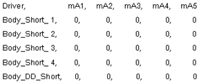
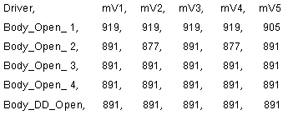
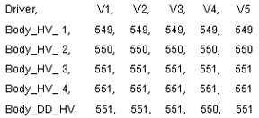

Table 2: 1.5T Body Mode, Any LPCA
 | In 1.5T Body Mode the Dynamic Disable lines are reverse-biased with high voltage so no current should flow. A significant amount of current flow would indicate a short-circuit condition on the circuit. Large current flow indicates something like a shorted PIN diode or shorted cable while smaller current flow may indicate a leaky PIN diode. Leaky PIN diodes can be a source of noise. |
 | This data is, for the most part, not valid and can be ignored. |
 | In 1.5T Body Mode high voltage is applied so the results should always look similar to what is shown on the left. |